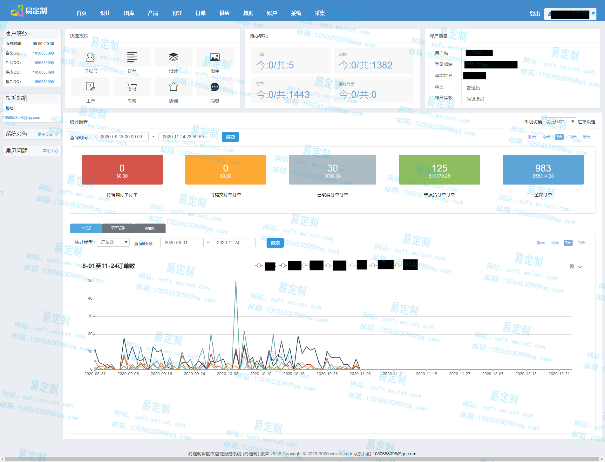
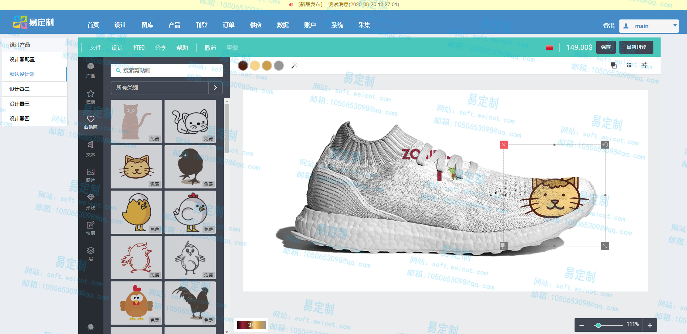
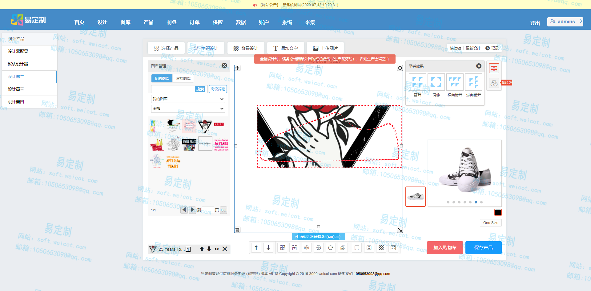

易定制智能供应链服务系统 (易定制) 解决方案
易定制 产品信息导航 最新版本 5.2 原:WeiCotERP(wc2m)定制类平台
项目主页 | 历史发行版本 | 操作手册 | 部署方式 | 全系列解决方案 | 授权以及许可
易定制智能供应链服务系统
易定制智能供应链服务系统 是一种 C2M、S2B 智能供应链服务系统 ， 企业利用智能升级传统工厂，通过互联网渠道改变传统消费生产模式，配合技术改造传统制造业走向柔性化和智能化生产；实现以零库存帮助创业者提高竞争能力，降低经营风险。以柔性化生产和个性化创作帮助内容和流量客户提高变现能力，系统支持多个品类如服装、家居、电子周边、鞋帽、箱包等可以实现定制化生产 支持一件起定，批发价格帮助内容和流量客户提高变现能力 。本系统提供了高品质并且安全的行业解决方案 。
已经对接的第三方平台
亚马逊， wish，速卖通，zencart，magento，淘宝，lazada(测试)， Shopee(测试)，系统自带的B2C商城，等其他第三方电商类平台
管理端首页 或 商户端首页
由于可以根据权限进行角色分配所以不同角色进入的导航页面不一样

产品设计页面
默认的产品设计工具

我们也提供针对指纹定制的设计器 提供后端兼容接口

设计器设计产品的效果 点击即可解 通用后端产品图片合成工具产品图片合成效果图
我们也提供多种设计工具供你选择按需集成 点击即可解 个性化定制系统(服装日用品等)
主要功能和系统(更多请看使用手册)
一 业务系统
- 1.工厂加盟系统
- 2.业务加盟系统
- 3.平台加盟系统
- 4.设计加盟系统
- 5.财务核算系统
- 6.数据分析系统
- 7.综合平台系统
- 8.B2C 商城系统
- 9.B2B2C 系统
- 10.拼团系统
- 11.客服与支持系统
二 数据系统
- 1.通用采集系统
- 2.通用设计系统
- 3.通用API系统
- 4.基础数据归档系统
- 5.通用异步服务端系统
- 6.反关联系统 更多请看github上的系统介绍
- 7.物联网采集与控制系统
设计类系统基础功能
- 账号管理
- 账号分为4个等级
- 系统管理账户 可管理系统的一切事物
- 工厂账户 用以添加工厂的，产品模板，管理通过业务系统分发到工厂的订单等
- 加盟商账户 账户可以分组 ，分业务员，子账号。并在这种等下下共享不同的资源包括可以设计的产品以及图库订单等资源
- 设计模板上传
- 图片上传
- 设计产品 可选择设计效果合成速度以及质量等。带自动居中 ，自动纠偏，高性能，所有有图案的都支持
- 导出产品
- 导入订单
- 查看订单
- 生产系统
- 由高性能图片引擎 合成工厂图片
- 并将订单信息推送到工厂端 具到的那个工厂那个工人哪台打印机上并及时反馈生产信息
- 等其他功能
支持产品类型
- 全幅
- 非全幅
- 多色彩变体
- 多细节变体
- 多尺码变体等
- 以及其他一些常用变体
设计器专业版部分功能
- 1.支持快捷键
- 2.支持常用设计操作
- 3.支持自动纠偏
- 4.支持自动居中
- 5.支持多色彩自动合成
- 6.支持全幅类设计效果图的细节图自动合成
- 7.支持快速设计
- 8.支持设计与生产一体化标准
- 9.支持多面设计 与设计后的多面效果图自动补全
- 10.支持工厂视图合成
- 11.支持工厂视图 自动切分
- 12.支持类3D 多面效自动补全
- 13.支持低性能下快速高质量合成
- 14.批量自动设计
开发相关
主开发框架
WeiCot Framework (WF)
WeiCot Swoole Framework (WSF)
WeiCot Design Components (WDC)
Vue,jQuery,Swoole,Nodejs think-orm (可选),golang,golang walk,Phalcon
开发语言/工具
php,golang ,Zephir,javascript, Nginx,RabbitMQ,Mysql,MongoDB,Elasticsearch等
系统架构
WEB 端 服务端 远程同步端 反代集群 队列服务
架构思想
高可用 高性能 模块化 可拆分 低消耗 分布式 反特征
WED 端 与服务端 通讯支持
消息中间件 与队列
支持 简易中间件 w-redis 和 MQ 服务端自带 基于TCP 的 RPC 通讯模块
其他相关
3D 设计器
以上部分模块已经开源
api 系统
异步 系统
服务端
- 1.支持RPC 模块调用
- 2.支持并行任务
- 3.支持TCP 服务端
- 4.支持TPC 服务端异步推送以及同步
- 5.支持多进程任务
- 6.支持队列
- 7.支持数据包切分和校验
Swoole：面向生产环境的 PHP 异步网络通信引擎
使 PHP 开发人员可以编写高性能的异步并发 TCP、UDP、Unix Socket、HTTP，WebSocket 服务。 Swoole 可以广泛应用于互联网、移动通信、企业软件、云计算、网络游戏、物联网（IOT）、车联网、智能家居等领域。 使用 PHP + Swoole 作为网络通信框架，可以使企业 IT 研发团队的效率大大提升，更加专注于开发创新产品。 项目官网
捐赠
您的捐赠是对WC2M 项目开发组最大的鼓励和支持。我们会坚持开发维护下去。 您的捐赠将被用于：
- 持续和深入地开发
- 文档和社区的建设和维护